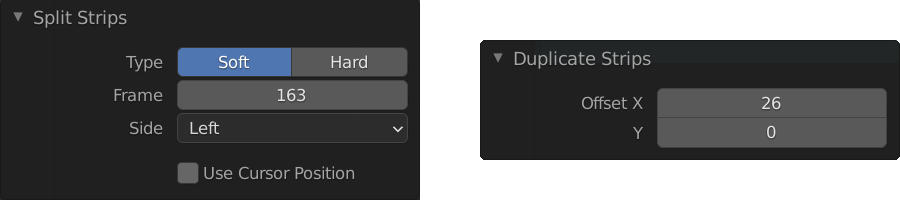
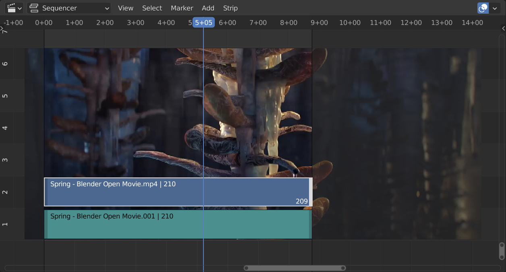
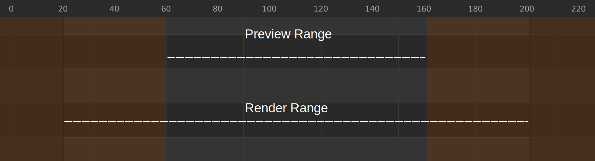
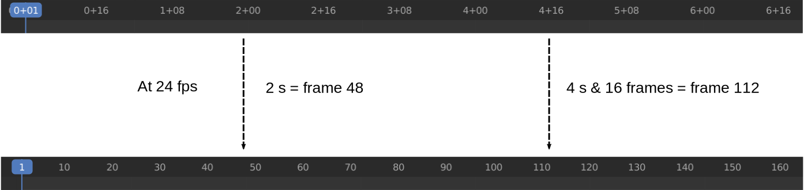
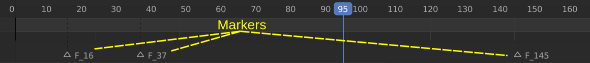
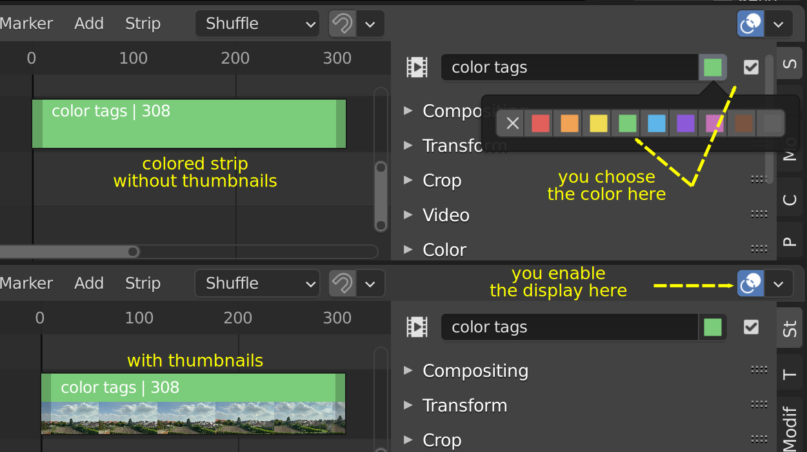

1.1.1. Header¶
VSEの Header はデフォルトでは、エディターの最上部に配置されます。ヘッダー上で RMB をクリックすることで、コンテキストメニューからヘッダーを最下部に配置することもできます。利用可能なオプションの詳細は、 Header > Context menu を参照してください。
Headerには3つの領域があります。
1.1.1.1. Type Selector ボタン¶
左側の領域は Editor Type Selecto と View Type Selector を持ちます(図1)。 名前が示すように、Editor Type Selectorを使用して、エディター全体を、別のタイプのエディター(例えば Compositor)に切替えることができます。 View Type Selectorを使うと、特定のビュー(Sequencer、Preview、Sequencer/Preview)を選択できます。選択されたビューのタイプによって、多少内容が異なるHeaderが表示されます。
1.1.1.2. メニューバー¶
中央の領域はメニューバーを持ちます。この場合も、メニューはコンテキストメニューを使って、表示・非表示を切替えれます。 図1は、メニューの下に、展開されたメニュー項目を合せて表示しています。
図1: パネルが展開されたSequencerビューのHeader¶
[Select], [Marker], [Add] と [Strip] メニューは、一般的な動画編集ワークフローの中で登場する時に、以降のセクションや Video Editingの章で説明します。 [View] メニューは、Sequencerの操作に特有の多くの項目を含むため、ここで説明します。
1.1.1.2.1. View メニュー¶
Sequencerの[View]メニューのすべてのサブメニューの概要は、図1(左下のパネル)を参照してください 。
- Sidebar N
Sidebarを表示・非表示します。ショートカットキー N か Sidebarボタン(図１)を使って、表示・非表示を切替えれます。 Sidebarは Sequenceer の右側に表示され、アクティブストリップの全てのプロパティーが表示されます。 アクティブストリップは選択されたストリップである 必要はない ことに注意してください (参照 Selecting)。 様々なストリップのタイプの全プロパティーの詳細については、 Video Editing セクションを参照してください。
- Tool Settings
Tool Settings (メニューバーの下に配置) を表示・非表示します。 Tool Settings は 主にToolbar (T)と組合せて使用します。 例えば、ToolbarでBladeツールを選択した場合、Tool Settingsで Bladeツールのカット方式を Soft と Hard から選択できます。
{kind=link}
- Toolbar T
Toolbar を表示・非表示します。ショートカットキー T か Toolbarボタン(図1)を使って、表示・非表示を切替えれます。 SequncerのToolbarは、かなり簡素で役に立ちません。これには、選択ツールとBladeツールのみ含まれます。
警告
どちらの汎用ツールも上手く機能しないようです。例えば、VSE Transform Tools のような一部のアドオンは、Toolbarを有効に活用します。 1
- Adjust Last Operation
有効にした場合、最後に完了した操作のプロパティーを変更するためのポップアップパネルを表示します。 一般的な背景情報については、Adjust Last Operation を参照してください。
例えば、ストリップの複製オペレーションを実施後に、複製したストリップの水平(開始フレーム)・垂直(チャンネル)オフセットを変更できます。また、ストリップのカットオペレーションを実施後に、カット方式を変更できます(図3)。
図3: Adjust Last Operationの例¶
- Preview as Backdrop
現在のフレームをSequencerの背景として表示します。(Compositor と同じです) この背景プレビューは、プレイヘッドを移動すると更新されます。
もちろん、大量のストリップがSequencerに配置されている場合、背景画像の大部分は隠されてしまいますが、 Sequencer in Full View で表示した場合、背景へのプレビューは、別のモニターに Preview画面を表示する変わりに使用できます。
図4: Sequencer内のムービーの背景プレビュー¶
- Frame Selected - Frame All - Zoom
これらのメニュー項目は全て、Sequencer画面のズームインまたはズームアウトに関するものです。 このトピックは(全てのショートカットキーも含め)、 Zoom セクションで詳しく説明されています。
- Refresh All
click the Refresh All button. Blender will update and synchronize all cached images and compute the current frame.
Blenderに強制的にファイルを再読み込みさせたり、強制的にシーンストリップを再描画させる場合は、 [Refresh All] ボタンをクリックします。 Blenderはキャッシュされた全ての画像を更新・同期し、現在のフレームを処理します。
再生中に予期しない glitch(不具合) が発生した場合は、キャッシュが更新されない場合があるため、 [Refresh All] する必要があります。
例えば、Sequencerにシーンストリップ(参照 Strip types)があるとします。 もととなるシーンでなにかを変更しても(例えば、オブジェクトを回転するなど)、Squencerはキャッシュを更新しません。 Sequencerでは、オブジェクトが回転されることなく表示されます。 プレイヘッドを動かすとキャッシュは更新されますが、一度に統べてのキャッシュが更新されるわけではありません。
これにより、glitches(キャッシュ内のいくつかのフレームは更新され、それ以外は更新されない状態)が発生します。 この場合、[Refresh All] ボタンを使うと良いでしょう。キャッシュが無効になり、キャッシュが再構築されます。
別のユースケースは、追加した画像を後で外部プログラムで変更した場合です。 Belnderはこのような変更を知ることができません。 そのため、画像を再読み込みしてキャッシュを更新する必要があります。
マウスポインタが正しい領域(ここでは、Sequencerタイムライン)上にある必要があることに注意してください。 2
- Navigation
タイムラインを移動するには、プレイヘッドを移動します。[Navigation] サブメニューは Navigate セクションで詳しく説明します。
{kind=link}
- Range
The first three menu items (see figure 5) will change the Preview Range or Playback Range. The last three menu items are meant to set the Render Range.
[Range] メニューを使うと、どのフレームをプレビューまたはレンダリングするのかを指定できます 3。 最初の3つのメニュー項目(図5)は Preview Range や Playback Range を変更します。 最後の3つのメニュー項目は、Render Range を設定するためのものです。
- Set Preview Range P
プレビューやプレイバックに使用する範囲を対話的に定義します。このメニューを選択すると、十字カーソルが表示されます。このカーソルを使って、プレビューしたいフレームの範囲を、ドラッグしてボックス選択します。 Sequencer領域内のどこにでもドラッグして選択できます。 選択された Preview Range は通常の黒色で表示されます。 Preview Rangeの範囲外のフレームは茶色で表示されます(図6)。
この Preview Range は Render Rangeにまったく影響しません。どちらも独立して存在できます。
- Set Preview Range to Strips
Preview Rangeを、選択されたストリップの範囲に設定します。
- Clear Preview Range (Shortcut: Alt-P)
Sequencer領域内の任意の場所で、Alt-P を押すと、Preview Rangeがクリアされます。 Preview Rangeが定義されていない場合は、Render Range がplaybackやpreviewに使用されます。
図6: Preview Range と Render Range¶
Render Range は通常、プロジェクトのSetupフェーズ (参照 Project Settings) で設定されます。Render Range は、様々エディター(Properties や Timeline )で設定することもできます。
- Set Start Frame Ctrl-Home
Render Rangeの開始位置を現在のPlayheadの位置に設定します。
- Set End Frame Ctrl-End
Render Rangeの終了位置を現在のPlayheadの位置に設定します。
- Set Frame Range to Strips
Render Rangeを選択したストリップの範囲に設定します。
- Sync Visible Range
VSEは時間ベースのエディターです。そして、Dope Sheet や Graph Editor、Timeline も同様です。アニメーションの微調整には、よくGraph Editorが利用されます。そのため、これら2つのエディターは、同期して動作する必要があります。
Playhead は、常にエディター間で同期しています。PlayheadがSequencerの15フレーム目にある場合、Graph Editorでも15フレーム目にあります。 しかし、表示範囲はデフォルトでは同期しません。そのため、Sequencerで15から150フレームの範囲を表示し、Graph Editerではまったく異なる表示範囲が表示することができます。
場合によっては、表示範囲を同期することで、役に立つことがあります。Sequencerでズームインすると、同様にGraph Editorでもズームインされます。そのためには、このオプションを有効にする必要があります。 4
警告
現在のところ、エディターのサイドパネル(ショートカット N や Tで開く、SidebarやToolbar)を開くと、サイドパネルのサイズに応じて、表示範囲が縮小または格段します。これは、'Region Overlap' ([Preferences] > [Interface] > [Editors] > [Region Overlap] > [Enabled])を有効にしても発生するため、[Sync Visible Range]オプションは役に立たなくなります。
課題
このオプションの意味のある例を教えてください。 5
- Show Seconds Ctrl-T
デフォルトでは、タイムラインの単位はいわゆる SMTEタイムコードです。例えば、12+08は、12秒と8フレーム後の時刻になります。このオプションを無効にすると、タイムラインはフレーム単位で表示されます(図7)。
図7: [Show Seconds]オプションの有効/無効¶
- Show Markers
このオプションはデフォルトで有効に設定されています。このオプションはマーカー領域(図8)を表示します。 無効の場合は、マーカー領域だけでなく、[Marker]メニューも非表示になります。そして、マーカー関連操作(追加、削除など)がこのエディター内で利用できなくなります。
マーカーの使用については、マーカーの使用 で詳細を説明する。
図8: 3つのマーカーがあるマーカー領域¶
- Show Cache, Sequence Render Image, Sequence Render Animation, Export Subtitles
キャッシュは Video Editing > Setup > Environment > Proxies & Cache セクションで説明します。
Rendering は Video Editing > Render セクションで説明します。
Subtitles は Video Editing > Edit > Sound で説明します。
課題
それらのセクションへのリンクを追加する。
- Toggle Sequencer/Preview Ctrl-Tab
エディターの表示タイプを Sequencer とPreview の間で切替えます。ショートカットキー Ctrl-Tab を使うと、これらの2つのビューを素早く切替えることができます。 このコマンドは、Sequencerをフル表示している編集している場合、特に便利です。
- Area
このメニューを使用すると、Sequencerが占める領域を再定義できます。全てのオプションは、user interface section で詳しく説明されています。
https://docs.blender.org/manual/en/dev/interface/window_system/areas.html?highlight=area
1.1.1.2.2. Select - Marker - Add - Strip メニュー¶
[Select]、[Marker]、[Add]、[Strip]メニューは、一般的な動画編集ワークフローの中で登場する時に、以降のセクションや Video Editingの章で説明します。
1.1.1.3. Overlap ドロップダウン¶
Sequencerのストリップを移動する場合、他のストリップの上にドロップできます。Overlapドロップダウンを使うと、移動後のストリップの重なりを解決する方法を指定できます。 使用可能なオプションは、[Shuffle]、[Overwrite]と[Expand]です。video editing > montage > move で詳細を説明しています。
1.1.1.4. Snapping¶
Snappingオプションを有効にした場合、Sequencer内のストリップを移動すると、他のストリップ(またはPlayhead)の境界にストリップがスナップ 6 されます。 移動するストリップが、他のストリップの境界近くにある場合、細い白線が表示されます。Snappingドロップダウンを使うと、いくつかの特別のオプションを有効にできます(例えば、サウンドストリップは無視するなど)。 詳細については、video editing > montage > move を参照してください。
1.1.1.5. Show Overlay ボタン¶
ヘッダーの右端に、[Show Overlay]ボタンがあります(図9)。 :kbd:`LMB - クリック`で、オーバーレイの表示を、完全に有効するか有効にするかを切替えれます。 また、ドロップダウンを表示し、一部オプションの有効無効を切替えることもできます。
ドロップダウンのパネルには、デフォルトでは、[Name]、[Source]、[Duration]、[Color Tags]、[F-Curves]、[Gird]と[Waveform Display]が設定されているようです。7
{kind=link}
- Name
このオプションを有効にするとストリップバーの上部にストリップの名前が表示されます。ストリップの先頭に左揃えで表示されます。ストリップの名前はストリップのプロパティーで設定されます。
- Source
このオプションを使うと、ストリップのソースファイル名とパスを表示できます。ソースは、Source panel で設定されます。
- Duration
このオプションを使うと、ストリップの長さ(Duration)が表示されます。Durationには常にフレーム数が設定されます。Durationは複数の方法で設定できます。Durationの数値は Time panel で利用できます。
- Color Tags
[Color Tags]オプションを選択すると、ストリップのプロパティーパネル(図10)で選択した色が表示されます。デフォルトカラーはPreferenceで設定されます。参照: Strip types
図10: Color Tags¶
- Offsets
分割したストリップを作成するとそのオフセットフィールドの値を取得されます。このオプションを使うと、細い青色のバーでオフセットの値を視覚化します。8 ストリップの開始オフセットと終了オフセットのみ表示できます。参照: text on splitting
- F-curves
アニメーション化する時、例えばフェード効果を追加時、F-curveが作成されます。実際、ストリップのOpacityプロパティーをアニメーション化しています。 このオプションを使うと、F-curveを視覚化できます。
図11: F-curves
- Thumbnails
MovieやImage Sequence、Imageストリップについては、サムネイルを表示できます。 図12の例では、ストリップには30フレームあります。各フレームは青色の背景に黄色のフレーム番号が表示されます。 サムネイルを表示するためには、[Thumbnails]オプションを有効にし、かつストリップバーの高さが十分である必要があります。 認識できるようにするには、サムネイルチャンネルは少なくとも約92ピクセルが必要です(図12 一番下のストリップ)。
サムネイルの幅は実際の画像のアスペクト比に応じて計算されます。図12 では、ストリップの高さも変更されていないため、左側のストリップの幅はズーム レベル全体で変化しません。 ただし、右上のストリップでは、高さははるかに大きいため、幅も大きくなります。
図12: 異なるズームレベルのThumbnails
サムネイルの数は、サムネイルのサイズ (上記を参照) とストリップの長さ (ズーム レベルに応じて異なります) によって異なります。ストリップの最初のフレームは常にサムネイルとして表示されます。
サムネイルは、別のスレッドを使用してソース ファイルからロードされ、キャッシュに保存されます。キャッシュ容量は 5000 サムネイルに制限されており、制限に達すると表示されない画像のクリーンアップが実行されます。
- Grid
有効にすると、 nフレームごとに細い黒色の垂直線がシーケンサーに表示されます。フレーム数はズーム レベルによって異なりますが、(十分にズームアウトした場合) 1000 フレームごとに開始され、500、200、100、50、20、15、10、5 とズームインしながら減少し、最終的には 2 フレームごとに停止します。 このグリッドは、タイムライン内のストリップの位置を認識するための視覚的な補助です。
- Waveform Display
図9 では、このオプションはすでに設定されています。ストリップ オプションをオーバーライドして、ストリップ バーにサウンド ストリップの波形を表示する (波形オン) か表示しない (波形オフ) かを選択できます。ストリップ オプションは、Sound のSoundプロパティで設定します。
{kind=link}
{kind=link}
脚注
- 1
(訳注) このアドオンのリポジトリを見ると、最終コミットは3年前なのでメンテナンスされていないため、利用しないほうが良さそうです。 TODO: SequencerのToolbarに良いツールを追加できるアドオンを探す
- 2
(訳注) メニューで [Refresh All] する場合は必ずマウスポインタはSequencer内にあるため、ショートカットキーで [Refresh All] する場合の注意だと思われます。
- 3
(訳注) 処理対象とするフレームの範囲を指定できます
- 4
(訳注) Sequencer と Graph Editorを同期させる場合、その両方の[Sync Visible Range]を有効にする必要があるようです。どちらか一方では同期しません。
- 5
(訳注) 厳密な表示範囲の同期ではなく、ざっくりした表示範囲の同期になります。それでも、いくつかのマーカー間で頻繁にPlayheadを動かして、アニメーションを調整する場合は便利かもしれません。
- 6
(訳注) スナップとは吸着するように動作することだそうです。
- 7
(訳注) 本文の内容がBlender4.0とあっていないため、訳者が修正・追記しました。
- 8
(訳注) MovieやSoundストリップなどStrip Offsetを持つストリップのみ対象になるようです。